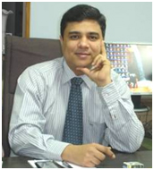

FOUNDER, CHAIRMAN

Born: 1975
Alma mater: Stanley Medical College, Chennai
OUR SPECIALISTS

DR MK MEHTA
Born On: 12 August 1980
Born In: Karachi, India
Career: Heart Surgeon

DR MARK SMITH
Born On: 12 January 1987
Born In: Montreal, Canada
Career: Neuron Specialist
HEART DEPARTMENT
-
Heart Institutes are regarded as one of the top centres in the world, performing a multitude of treatments and procedures in cardiology and cardiothoracic surgery.The scorecard shows an unmatched record of over 1,52,000 cardiac and cardiothoracic surgeries.
-
HIGHLIGHTS
We have wide experience in the most complicated coronary artery bypass surgery, surgery for all types of valvular heart diseases, and heart surgery for children, with success rates comparable to international standards.
-
Over 99.6% of our cardiac bypass surgeries are Beating Heart surgeries-which ensure quicker and easier post-operative recovery.
-
Our cardiologists have pioneered Coronary Artery Stenting as well as Laser Angioplasty.
-
They are experts in techniques as advanced as Percutaneous Transluminal Septal Myocardial Ablation.
SPINE SURGERY EXPERTISE

The Spine Surgery Centers of WE CARE Hospitals have many medical milestones to their credit the first lumbar disc replacement in the country was performed at WE CARE Hospitals and several cervical spine surgeries and lumbar disc replacements have also been performed
The units are also well known internationally for complex deformity surgeries as well as revision spine surgery.
NEUROLOGICAL SURGERY
-
A redo of Deep Brain Stimulation (DBS) - A patient with advanced Parkinson's disease from Mauritius who had DBS done 7 years back had non functional leads. He successfully underwent a redo DBS surgery with good results - a first for WE CARE Hospitals.
Critical Care Specialist & Doctors
-
Critical care specialists at WE CARE hospitals are dedicated to ensuring the survival of the most critically ill patients. Trained in the best of institutions around the world, these dedicated specialists work 24 X 7 to revive critically ill patients. They also manage critical care units efficiently, ensuring that the whole team of doctors, nurses and paramedics work together, using strict protocols to minimise infections, complications and ensure speedy recovery.